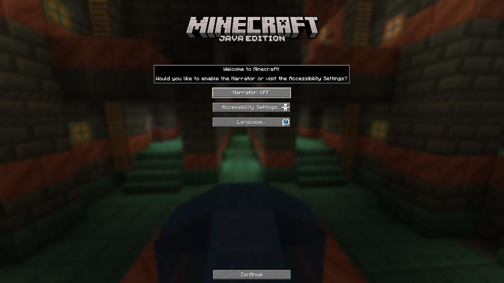
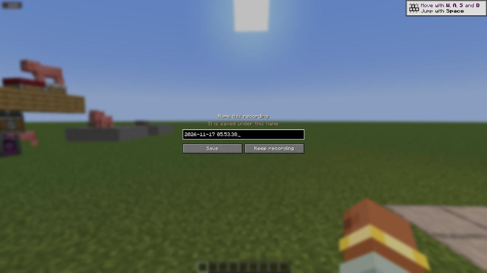
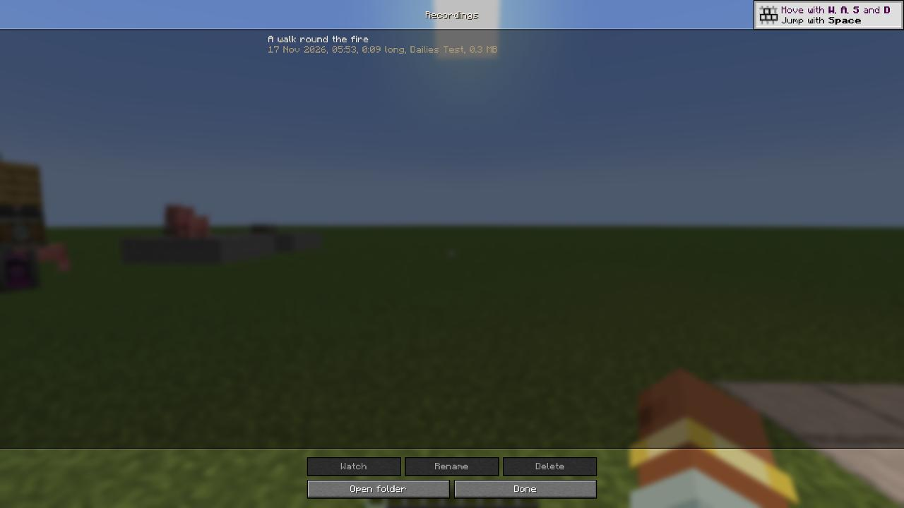
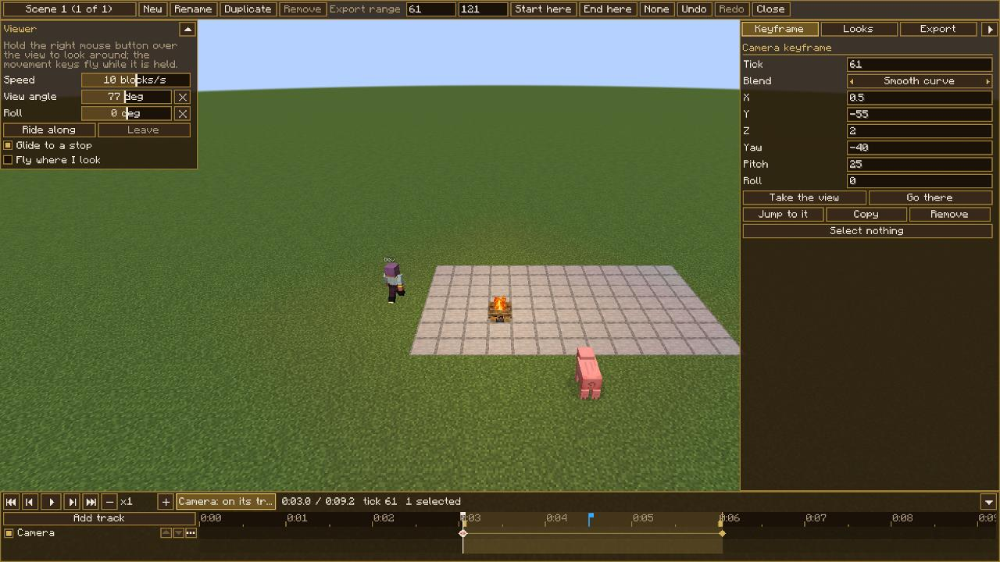
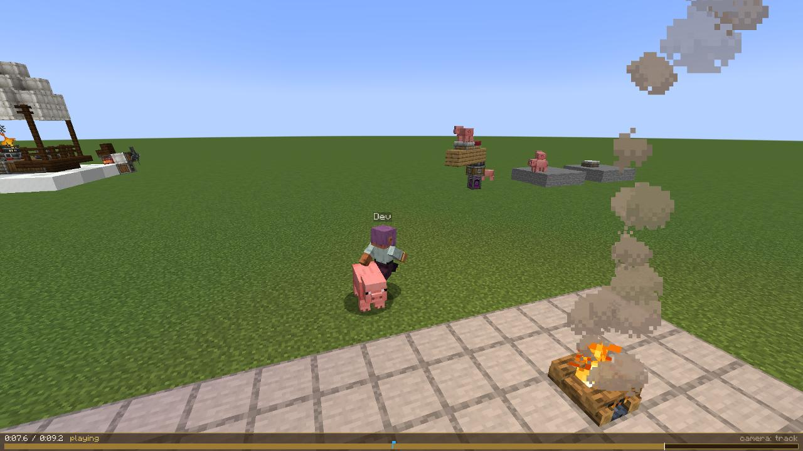
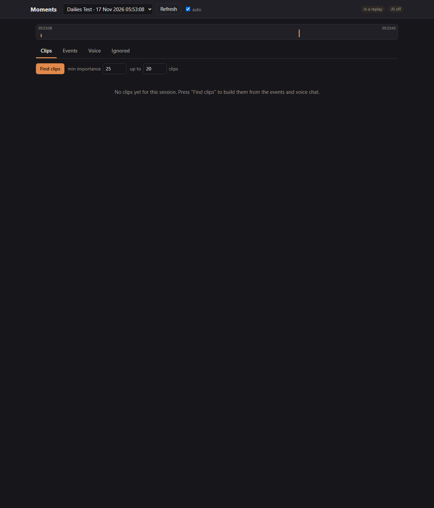

The Dailies
Record what you play, watch it back from any angle, turn it into shots and export them as video. Every picture here was taken from the running mod.
Install
Dailies is one jar for the client. A server never needs it, and you can join any server with it installed.
- Build it with
gradlew build. The jar isbuild/libs/dailies-1.21.1-0.1.0.jar(31 MB, because the video encoder is packed inside). - Put it in your
modsfolder with NeoForge 21.1 for Minecraft 1.21.1. - Everything it writes goes in
dailies/in the game folder:recordings,moments,exportsandencoder. - Create, Sable, Create Aeronautics, Simple Voice Chat, Sodium and Iris are supported when present and never required.

Record
Open the pause menu in any world or server. The Dailies buttons sit beside the game's own.
- Start recording begins at once. A brass plate with a red lamp and a clock shows in the top left while it runs.
- Pause stops the clock; nothing is captured until you resume.
- Finish asks for a name and saves. Cancel deletes what was captured, after asking.
All of these also have key bindings under Options, Controls, Dailies. They are unbound until you choose keys. So are the four marker keys, which drop a coloured flag on the timeline at that moment.


Good to know
- A recording is one
.dailiesfile. Rename it, move it, copy it; everything that refers to it uses an id stored inside. - If the game closes or crashes mid-recording, the next launch offers to recover it. At most a couple of seconds are lost.
- "Start by itself" records every world you join. "Finish on leaving" is on by default.
- Recording costs no measurable frame time: 8.5 ms a frame with it on and off in the test runs.
Watch
Pick a recording from the list and choose Watch. You are a free, invisible camera inside the recorded session. The player who made the recording appears like anyone else.
Fly with the usual movement keys and the mouse. The bar along the bottom shows the whole recording, where you are, any markers, and whether the camera is free or following a track.


| Key | Does |
|---|---|
| P | Play or pause |
| . | Forward one tick (a twentieth of a second) |
| ← → | Jump back or forward five seconds |
| - = | Slower or faster, from a tenth of normal speed to eight times |
| C | Follow the camera track, or fly free |
| T | Open or close the editor |
| F7 | List the mods that differ from when the recording was made |
| F1 | Hide everything of Dailies' own |
| Esc | The pause menu, with Close recording |
Jumping to any moment shows the world exactly as it was then, whether you got there by playing or by jumping forward or back.
Machines

What plays back
- Create contraptions, with all their blocks, turning as they did.
- Sable physics objects and Aeronautics craft, following their recorded position and rotation.
- Mobs and players sitting in Create seats on either.
- Mobs and players standing loose on a moving deck, carried with it.
How close
In the test runs, craft were within 0.26 of a block of their live position after a jump, including during a ten-block fall. Seated and standing passengers passed the same check.
Dailies needs none of these mods and switches its support on only when they are installed.
Edit
Press T while watching. The editor leaves the middle of the view clear and does not pause the world.

The parts
- Top bar: scenes (new, rename, duplicate, remove), the export range, undo, redo.
- Viewer (left): flight speed, view angle, roll, ride along with an entity.
- Right panel: three tabs, Keyframe, Looks and Export.
- Timeline (bottom): transport, a ruler in seconds, one row per track, keyframes as diamonds.
Framing a shot
Hold the right mouse button over the view to look around and fly with the movement keys, without closing the editor. The mouse wheel changes flight speed while you fly.
Working with keyframes
- Add track, pick a kind, then Add at the playhead in the Keyframe tab.
- Click a diamond to select it; Shift-click or drag a box for several.
- Drag selected diamonds to move them. Delete removes them.
- Ctrl+C and Ctrl+V copy and paste at the playhead.
- Ctrl+Z and Ctrl+Y undo and redo, without limit.
- Mouse wheel over the timeline zooms; Shift+wheel pans.
Keyframes move the view only while the recording plays or exports, and only while "follow the camera track" is on. Flying off by hand switches it off; C switches it back on.
| Kind of keyframe | What it sets |
|---|---|
| Camera | Position, heading, tilt and roll. Blends between keyframes. |
| Orbit | Circles a point while looking at it. |
| Follow entity | Stays beside an entity, or stays put and turns to watch it. |
| Smart Camera | Films a player by itself. See the next chapter. |
| Field of view | The view angle in degrees. |
| Camera shake | A hand-held wobble. |
| Speed | Playback rate. |
| Timelapse, Freeze | Squeeze a stretch into a set time, or hold the world still. These apply in exports. |
| Time of day | Overrides the sky's time. |
| Block change | Shows a chosen block at a position from that tick on. |
| Audio | A sound file mixed into the export from that tick. |

Looks
Looks belong to a scene and apply in playback and export alike.
- Show or hide the HUD, chat, boss bars, titles, name tags, particles and held items.
- Hide kinds of entity, or one entity you click: hide it, rename it, force or remove its glow, hide its cape or armour.
- Weather, fog, sky on or off with a plain background colour for keying, night vision.
- An aspect guide and rule-of-thirds lines. Guides never appear in exports.
Everything you change is saved into the recording as you go.
Smart Camera
A Smart Camera keyframe names a player and a way of filming them. From there until the next keyframe on its track, the camera places and aims itself.


| Mode | What the camera does |
|---|---|
| Chase | Follows from a set distance and angle relative to the way the player is heading. |
| Tripod | Stands where you put it and turns to keep the player in frame. |
| Orbit | Circles the player. |
| Director | Chooses chase, tripod and orbit shots by itself and cuts between them. |
Every mode can place the player anywhere in the frame, leave room ahead of them when they move, zoom to keep them the same size, fit a vehicle or craft they ride into the shot, and move in when blocks get in the way. Add one from the Keyframe tab or with the smart_camera_add tool.
Export
Set the export range on the top bar, open the Export tab and press Export. Each frame is drawn at an exact moment of the recording, so a slow computer gives the same video as a fast one, only later. Playback is put back as it was when the export ends.
- Size: any, including larger than your screen. Presets from 720p to 4K and a vertical one.
- Frame rate: 1 to 240, presets from 24 to 120.
- With sound: the game's sound, recorded voice chat and audio keyframes, in step with the picture.
- Still picture: one PNG of the view at any size.
- PNG sequence: numbered pictures in place of a video.
While it runs, the window shows the picture scaled to fit, with frames done, speed, time left and Cancel. A cancelled export keeps what was written and still plays.

| Codec | Files | On the test machine |
|---|---|---|
| H.264 | MP4, MOV, MKV | Graphics card first (NVENC, Quick Sync), then OpenH264 in software |
| H.265 | MP4, MKV | Graphics card only (NVENC, Quick Sync) |
| AV1 | MP4, MKV, WebM | NVENC, then SVT-AV1 in software |
| VP9 | WebM, MKV | libvpx in software |

The video encoder is FFmpeg 8.1.2 in its LGPL build, packed inside the jar and unpacked to dailies/encoder the first time you export. Nothing else needs installing. THIRD-PARTY-NOTICES.md has the details and how to swap in another build.
Moments and the MCP server
While you play, Dailies logs what happened: kills, deaths, advancements, new biomes, markers, who you were with, and voice chat. It runs whether or not you are recording. Afterwards it proposes clips, each with a suggested camera.
Open http://127.0.0.1:25595/ in a browser on the same computer while the game runs. Find clips builds them; Cue opens the right recording at the right moment, with the camera if you want it.
The same address serves an MCP server at /mcp with 70 tools, so an AI agent can record, open, jump, edit, export and query moments. It listens on this computer only.

Settings
Mods, Dailies, Config opens the settings. They live in config/dailies-client.toml and take effect without a restart.
- Recording: start by itself, finish on leaving, notices, save without asking, record my HUD, record voice chat, marker colours.
- Export: default file name, throwaway frames for shader packs that build their image over time.
- Editor: how new keyframes blend, flight options.
- MCP server: on or off, and its port.
- Moments: what is logged, the ignore list, and the one switch for AI services (off by default).

Not yet checked
The scripted test passes in the plain game and in the modded one. These things it cannot judge, or does not cover.
- The editor has only been seen in still pictures. Dragging keyframes, right-button flight, picking an entity by clicking, and the export progress plate have not been tried by hand.
- Most scene looks (weather, fog, sky off, night vision, hidden entities, capes, armour) are built but have not been looked at, with or without a shader pack.
- Export has run with Sodium and Iris installed but with no shader pack switched on.
- Whether the Smart Camera's shots look good, and how the director cuts on a player moving smoothly.
- The recorder's HUD when riding along, and skins with the network off. Both are in the recording file; neither has been looked at in playback.
- Recording on a dedicated server with Create, Sable and Aeronautics, where Sable's motion channel is a real network path.
- Real voice chat. The test feeds sound in directly; capture through Simple Voice Chat, voices in playback and voices in exports are untested.
- Meetings, groups, another player's death, another player on your craft.
- McpCraft job board moments: the installed McpCraft 0.2.0 does not send the event the specification describes, so that step is skipped.
- Timelapse and freeze keyframes apply in exports but not while watching live.
- A player sitting in a seat on a contraption that is on a physics craft (a helicopter's pilot) has not been scripted.
- Aeronautics' burner cannot describe itself to a snapshot, so its flame state may reset after a jump to a later part. The balloon itself is unaffected.
- A few tool arguments from the specification's appendix are accepted but do nothing yet (track colour, six per-entity options). Each tool says so in its reply.
- Twice in about thirty runs the modded game failed while loading mods, before Dailies had run.
Running the tests yourself
| Command | Does |
|---|---|
gradlew test | 88 unit tests: the file format, curves, timing, undo. |
gradlew runTestClient | The scripted run in the plain game. Prints DAILIES TEST PASSED and closes. |
gradlew runTestModded | The same with the built jar beside Create, Sable, Aeronautics, Sodium, Iris and the rest. |
gradlew runHandsOn | Sixty seconds at the controls while recording, then the recording left open for you to watch. |